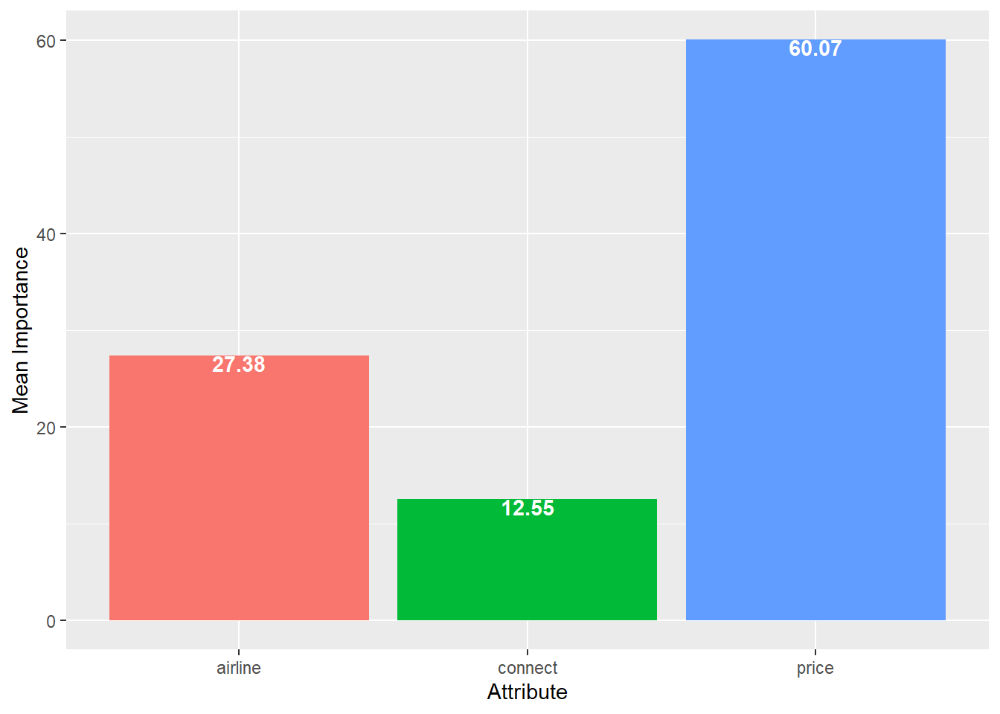

Topic 8 Conjoint Analysis
8.1 R Packages and Datasets for Topic 8
library(ggplot2) # Advanced graphing capabilities
library(dplyr) # Easier programming
load("Topic08/airlineca.rdata")8.2 Why Conjoint?
8.2.1 Buyers versus Sellers
- Buyers want to Maximize Utility
- Most desirable features
- Lowest possible price
- Sellers want to Maximize Profits
- Lower costs
- Greater value
8.2.2 Breaking Down Products
- Buyers value products based on the sum of their parts
- If we can learn how buyers value components, we can design better positioned products, and improve profitability
8.2.3 Learning What Customers Want
- Ask direct questions about preference
- Unfortunately, responses are often unenlightening
- No information about sensitivities within ranges
- Ask direct questions about importance
- Typically results if everything being important
- Problem of low discrimination
8.2.4 How is Conjoint Analysis Different?
- Present consumers with realistic tradeoffs
- For example: Which would you prefer in your next automobile?
- 210 Horsepower, 18 MPG
- 140 Horsepower, 28 MPG
- If “a” is selected, we infer that they prefer power
- If “b” is selected, we infer that they prefer fuel economy
- For example: Which would you prefer in your next automobile?
- Doesn’t ask directly about preferences or importance
- Preferences and importance inferred from tradeoffs made
8.2.5 Why Does Conjoint Analysis Work?
- Consumers:
- Make tradeoffs similar to those in the real market
- Are discouraged from saying all features are equally desirable
- Must make difficult tradeoffs, which provides more valuable info
8.2.6 Practical Guidelines
- Should be able to specify product as a bundle of attributes
- Need to know the determinant attributes
- Respondents should be familiar with category and attributes
- Firm should be able to act on results
8.3 How Conjoint Analysis Works
- Break down product into component parts or features
- Vary features to “build” many product concepts
- Ask respondents to rank/rate or choose between concepts
- Use statistics to derive each feature’s unique value \(\leftarrow\) Marketing analytics
8.3.1 Rules for Creating the Attribute List
- Each attribute has varying levels
- EXAMPLE
- Attribute: Brand
Levels: Apple; Samsung; Moto - Attribute: Screen Size
Levels: 5“; 5.5”; 6" - Attribute: Battery
Levels: 12 hrs.; 18 hrs.; 24 hrs. - Attribute: Price
Levels: $400; $700; $1000 - Attribute: Storage
Levels: 32GB; 64GB; 128GB
- Attribute: Brand
- EXAMPLE
- Try to balance number of levels across attributes
- Reduces the number of levels bias: Holding all else constant, attributes with more levels than others will be biased upwards in importance
- EXAMPLE
- A PRICE attribute with levels of $10, $12, $14,$16, $18, $20 will have a higher relative importance compared to other attributes than if the PRICE attribute levels were $10, $15, $20
- Attribute levels should be mutually exclusive
- EXAMPLE
- Attribute: Accessories
Levels: Screen protector; Phone case; Protection plan - We could not determine the value of providing these features at the same time
- Attribute: Accessories
- EXAMPLE
8.3.2 Build Concepts
- Suppose three attributes, each with three levels
- There would be \(3\times 3\times 3=27\) different profiles
8.3.3 Rate/Rank/Choose Concepts
- EXAMPLE
- Rate: On a scale of 1 to 100, how likely would you be to purchase the following product combination?
- Rank: Please rate the following combinations from most likely to least likely to purchase.
- Choose: Which of the following product combinations would you choose?
- Traditional Conjoint
- Rate or rank profiles
- Good for small number of attributes
- Can work for small samples
- Adaptive Conjoint
- Rate attributes and choose profiles
- Good for high number of attributes
- Bad for pricing research
- Choice-Based Conjoint
- Choose profiles
- Best mirrors real-world purchase
- Requires larger sample sizes
8.3.4 Use Statistics to Derive Unique Value
- Traditional Conjoint
- Uses regression-based methods
- Adaptive Conjoint
- Use hierarchical Bayesian methods
- Choice-Based Conjoint
- Uses multinomial choice models with hierarchical Bayesian methods
- QUESTION: What type of data output do we get from conjoint analysis?
ANSWER: Part-worth utilities- Numerical values that reflect how desirable different features are
- How consumers value each level of each attribute
- Can be created for each respondent
- Numerical values that reflect how desirable different features are
8.4 Part-Worth Utilities and Importances
8.4.1 Characteristics of Part-Worth Utilities
- EXAMPLE:
- Suppose we studied burritos and used two attributes: Price and Meat
- We might end up with the following part-worth utilities for a single respondent
Level Utility $6 48 $8 32 $10 24 Level Utility Chicken 29 Steak 13 - Higher is more preferred
- EXAMPLE:
- $6 preferred to $8
- $8 preferred to $10
- Chicken preferred to Steak
- EXAMPLE:
- Can be positive or negative
- Higher is still more preferred
- Estimated on an interval scale
- Addition/subtraction allowed
- Multiplication/division not allowed
- EXAMPLE:
- Can’t say $6 is “twice as preferred” as $10
- CANNOT compare level from one attribute with level from another attribute
- EXAMPLE:
- Can’t say $6 is more preferred than Chicken
- EXAMPLE:
- CAN compare differences between levels of one attribute with levels of another attribute
- EXAMPLE:
- Preference difference between $6 and $8 is same as between Chicken and Steak
- EXAMPLE:
- Total utility for a profile is additive
- EXAMPLE:
- \(3\times 2=6\) product combinations with the following utilities:
- $6 – Chicken: 48 + 29 = 77
- $8 – Chicken: 32 + 29 = 61
- $6 – Steak: 48 + 13 = 61
- $10 – Chicken: 24 + 29 = 53
- $8 – Steak: 32 + 13 = 45
- $10 – Steak: 24 + 13 = 37
- \(3\times 2=6\) product combinations with the following utilities:
- EXAMPLE:
8.4.2 Calculating Part-Worth Utilities (traditional conjoint)
- Each respondent provided ratings on many product profiles
- For each respondent, run a linear regression:
- \(profilerating_i=\alpha+\beta_kattr_{ik}\)
- Works if: profiles rated > attribute levels in the regression equation
- Regression coefficients become the part-worth utilities
- Not concerned with significance
8.4.3 From Utilities to Importances
- Part-worth utilities
- DO… directly provide a measure of preference within attributes
- DON’T… directly provide a measure of each attributes importance
- Conjoint Importances
- Measures how much influence each attribute has on choice
- Considers the difference each attribute could make in total utility
8.4.4 Calculating Conjoint Importances
- Calculate utility range for each attribute
- Sum up ranges
- Calculate percent of “total range” each attribute contributes
- EXAMPLE:
- Suppose we add a third attribute to our burrito example: Guacamole
- We might end up with the following part-worth utilities for a single respondent
Level Utility $6 48 $8 32 $10 24 Level Utility Chicken 29 Steak 13 Level Utility Yes 47 No 15 - Step 1: Calculate range for each attirbute
- Price: $6 (high) - $10 (low) = 48 - 24 = 24
- Meat: Chicken (high) - Steak (low) = 29 - 13 = 16
- Guacamole: Yes (high) - No (low) = 47 - 15 = 24
- Step 2: Sum up the ranges
- 24 + 16 + 32 = 72
- Step 3: Calculate percent of “total range” each attribute contributes
- Price: 24/72 = 33.4%
- Meat: 16/72 = 22.2%
- Guacamole: 32/72 = 44.4%
8.4.5 Interpreting Conjoint Importances
- Higher is more important
- Guac is most important, followed by Price, then Meat
- Ratio scaled
- Can say that Guac is twice as important as Meat
- Computing average importances
- Compute for each respondent and then average
8.4.6 Further Analysis
- If respondent characteristics are available, further analysis can be performed to understand relationships between characteristics and part-worths and importances
- Correlation analysis between part-worths/importances and continuous respondent characteristics
- Regression analysis with importances as the DV and characteristics as the IVs
8.4.7 Prediction
- Can predict value of different profiles to see which is preferred
- Can be done overall or on a case-by-case basis
8.5 Traditional Conjoint Example
8.5.1 Data
- Conjoint ratings from 40 people (\(caseid\)) on nine bundles
- Value (\(value\)): (0 = Not at all; 100 = Very much)
- Attributes:
- \(airline\)
- 1: Delta
- 2: Spirit
- 3: SW
- \(connect\)
- 1: None (No connections)
- 2: One (One connection)
- $price
- 1: $300
- 2: $450
- 3: $600
- \(airline\)
- Goal: Generate individual and average part-worths and importances
8.5.2 Summarize
- Average value ratings by attribute levels
airline | mean |
2: Spirit | 39.300 |
1: Delta | 52.375 |
3: SW | 50.900 |
connect | mean |
2: One | 45.0000 |
1: None | 48.7875 |
price | mean |
3: $600 | 20.250 |
2: $450 | 47.275 |
1: $300 | 75.050 |
8.5.3 Regression results for one respondent
For \(caseid=13\)
Estimate Std. Error t value Pr(>|t|) (Intercept) 0.6666667 1.993818 0.3343669 0.76011403398 airline1: Delta 16.6666667 1.845916 9.0289390 0.00286884539 airline3: SW 13.3333333 1.845916 7.2231512 0.00547151485 connect1: None 5.0000000 1.598611 3.1277162 0.05215791724 price2: $450 47.0000000 1.845916 25.4616079 0.00013286386 price1: $300 81.0000000 1.845916 43.8806434 0.00002605196Part-Worth Utilities
- Airline
- SW = 13.33
Delta = 16.67
Spirit = 0
- SW = 13.33
- Connections
- None = 5
One = 0
- None = 5
- Price
- $300 = 81
$450 = 47
$600 = 0
- $300 = 81
- Airline
8.5.4 Importances for one respondent
- Sum of ranges:
- \(16.67+5+81=102.37\)
- Airline Importance:
- \(\frac{16.67}{102.37}=16.28\%\)
- Connections Importance:
- \(\frac{5}{102.37}=4.88\%\)
- Price Importance:
- \(\frac{81}{102.37}=79.12\%\)
8.5.5 Average Part-Worth Utilities and Importances
Figure 8.1: Part-Worth Plots (R code)

Figure 8.2: Importance Plot (R code)
8.5.6 Explain Importances by Other Variables
Correlation Matrix for airline_
inc
airline_1: Delta 0.36*
airline_2: Spirit 0.17
airline_3: SW 0.36*
Correlation Matrix for connect_
inc
connect_1: None -0.01
connect_2: One 0.20
Correlation Matrix for price_
inc
price_1: $300 -0.35*
price_2: $450 -0.17
price_3: $600 -0.09
Correlation Matrix for Imp
inc
Imp_airline 0.47*
Imp_connect 0.17
Imp_price -0.48*
Regression Results for Imp_airline
Estimate Std. Error t value Pr(>|t|)
(Intercept) 10.1131 7.5592 1.3379 0.1891
inc 0.3325 0.0946 3.5161 0.0012
typePleasure -9.4936 5.3744 -1.7664 0.0856
Regression Results for Imp_connect
Estimate Std. Error t value Pr(>|t|)
(Intercept) 10.2144 5.3877 1.8959 0.0658
inc 0.0787 0.0674 1.1672 0.2506
typePleasure -5.0497 3.8305 -1.3183 0.1955
Regression Results for Imp_price
Estimate Std. Error t value Pr(>|t|)
(Intercept) 79.6701 8.7485 9.1068 0.0000
inc -0.4111 0.1094 -3.7567 0.0006
typePleasure 14.5439 6.2200 2.3382 0.0249- \(income\) has significant positive correlations with Delta and SW part-worths
- \(income\) has a significant negative correlation with $300 price
- \(income\) has a significant positive correlation with the importance of \(airline\) and a significant negative correlation with the importance of \(price\)
- For a \(\$1000\) increase in \(income\), we would expect a \(.33\%\) increase in the importance of \(airline\)
- For a \(\$1000\) increase in \(income\), we would expect a \(.41\%\) decrease in the importance of \(price\)
- We would expect the importance of \(price\) to be \(14.5\%\) greater for Pleasure travelers than for Business travelers
8.5.7 Predict Part-Worths for New Profiles
Profile 1 = airline_1: Delta / connect_1: None / price_2: $450
Mean Utility = 57.195
95% CI = (48.119,66.271)
Profile 2 = airline_2: Spirit / connect_1: None / price_1: $300
Mean Utility = 71.895
95% CI = (61.793,81.996)- On average, would prefer a cheaper flight on Spirit versus a more expensive flight on Delta
- Although the difference is not significant (\(95\%\text{ CIs}\) overlap)
8.6 Suggested Readings
- Multivariate Data Analysis. Hair, Joseph F.; Black, William C.; Babin, Barry J.; Anderson, Rolph E.
- 7th Edition: Search for “multivariate data analysis 7th edition hair”
- Chapter 7: Conjoint Analysis
- 5th Edition: Course reserves
- Chapter 7: Conjoint Analysis
- 7th Edition: Search for “multivariate data analysis 7th edition hair”
- Techincal papers on general conjoint analysis
8.7 R Code
Figure 8.1
source("Topic08/tradca.R") # Load 'tradca.R' user-defined function
caform <- value ~ airline + connect + price # Set formula
results <- tradca(formula=caform, # Pass formula
data=airlineca, # Pass data set
idvar="caseid") # Pass ID variable
results$pwplot # Request plotFigure 8.2
results$impplot # Request importance plot from previous resultsTable 8.1
airlineca %>%
group_by(airline) %>%
summarise(mean=mean(value))
airlineca %>%
group_by(connect) %>%
summarise(mean=mean(value))
airlineca %>%
group_by(price) %>%
summarise(mean=mean(value))Table 8.2
# Create new dataframe with demographic variables attached to case-level
# part-worths and importances
demos <- airlineca %>%
group_by(caseid) %>%
summarise(inc=first(inc),
type=first(type)) %>%
bind_cols(.,results$casetable[,2:12])
source("Topic08/cademo.R") # Load 'cademo.R' user defined function
cademo(caform, # Pass formula
demos, # Pass demos dataframe
c("inc", "type")) # Provide demographic variable namesTable 8.3
# Put your code for Q7 in this chunk
source("Topic08/capred.R") # Load 'capred.R' user defined function
prof1 <- c("airline_1", "connect_1", "price_2") # Set first profile
prof2 <- c("airline_2", "connect_1", "price_1") # Set second profile
capred(caform, # Pass formula
results$casetable, # Pass case-by-case part-worths and importances
prof1, # Pass profile 1
prof2) # Pass Profile 2